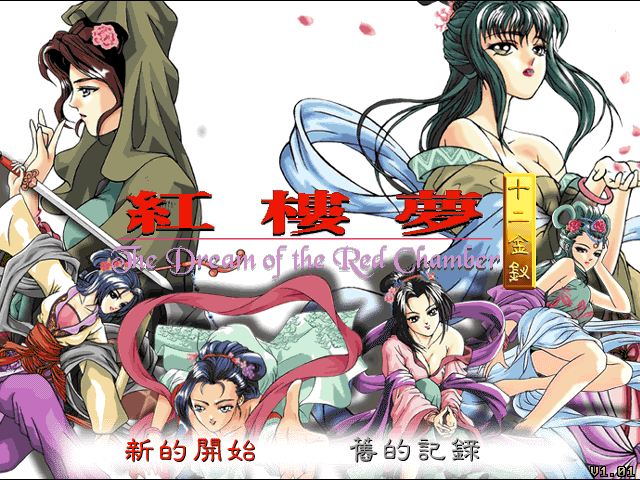
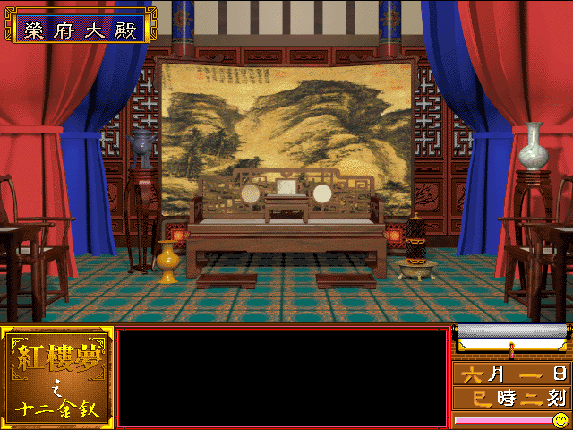

名稱：紅樓夢之十二金釵 (中文版) 簡介：智冠1998年出品的18禁戀愛養成遊戲 [待補]。

保護：光碟，破解碼（放入光碟才有背景音樂）： RED2001.exe (Windows版) 0F 85 B1 00 00 00 6A 4A 90 90 90 90 90 90 -- -- 75 42 68 1D EB -- -- -- 備註：網路上常見的HLM.cue 24音軌版光碟映像檔為自製光碟，正確應為39音軌。 備註：本遊戲有兩個版本，一是1998年的DOS版，一是2001年的Windows版(典藏版)。 備註：DOS版有1998/2/25與1998/8/22兩種光碟，尚不知其差異。 備註：Windows版執行時，不能有標題為RED2001的視窗，否則會無法啟動。 限制：Windows版執行前，必須先設定顯示模式為65536色（16位元），或進行下列修改： RED2001.exe 00 74 21 6A 00 6A 00 -- EB -- -- -- -- -- 檔案：1.01更新檔.rar = 1.01更新檔 CG全開存檔.rar = CG全開存檔 初始能力全滿存檔.rar = 初始能力全滿存檔 RED2001.rar = Windows典藏版